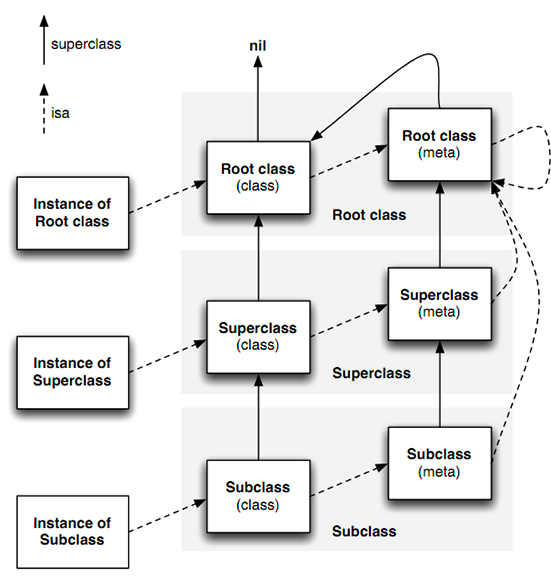

<!DOCTYPE html>
<html lang="zh-CN">
<head>
    <meta charset="UTF-8">
    <meta name="viewport" content="width=device-width, initial-scale=1.0">
    <title>深入理解 iOS/Swift 中的 Runtime 运行时 - 资深iOS工程师专业解读</title>
    <style>
        * { margin: 0; padding: 0; box-sizing: border-box; }
        :root {
            --primary: #2563eb; --secondary: #7c3aed; --accent: #f59e0b;
            --success: #10b981; --danger: #ef4444; --dark-bg: #1e293b;
            --light-bg: #f8fafc; --card-bg: #fff; --text: #1e293b; --text-sec: #64748b;
        }
        body {
            font-family: -apple-system, BlinkMacSystemFont, "SF Pro", "PingFang SC", "Hiragino Sans GB", sans-serif;
            line-height: 1.8; color: var(--text);
            background: linear-gradient(135deg, #667eea 0%, #764ba2 100%);
            min-height: 100vh; padding: 20px;
        }
        .container {
            max-width: 1400px; margin: 0 auto; background: #fff;
            border-radius: 24px; box-shadow: 0 25px 50px -12px rgba(0,0,0,0.25);
            overflow: hidden;
        }
        header {
            background: linear-gradient(135deg, #667eea 0%, #764ba2 100%);
            color: white; padding: 80px 60px; text-align: center;
        }
        header h1 { font-size: 3.5em; margin-bottom: 20px; font-weight: 700; }
        header p { font-size: 1.3em; opacity: 0.95; }
        nav {
            background: var(--dark-bg); position: sticky; top: 0; z-index: 1000;
        }
        nav ul { list-style: none; display: flex; justify-content: center; }
        nav a {
            display: block; color: white; text-decoration: none;
            padding: 20px 30px; transition: all 0.3s;
        }
        nav a:hover { background: var(--primary); }
        main { padding: 60px; }
        section { margin-bottom: 80px; }
        h2 {
            color: var(--primary); font-size: 2.8em; margin-bottom: 30px;
            padding-bottom: 15px; border-bottom: 4px solid var(--primary);
        }
        h3 { color: var(--secondary); font-size: 2.2em; margin: 40px 0 20px 0; }
        h4 { color: var(--text); font-size: 1.8em; margin: 30px 0 15px 0; }
        .code-block {
            background: #282c34; color: #abb2bf; padding: 25px;
            border-radius: 12px; margin: 25px 0; overflow-x: auto;
        }
        .code-title {
            background: #21252b; color: #61afef; padding: 10px 20px;
            border-radius: 8px; margin: -25px -25px 20px -25px;
        }
        .info-box, .warning-box, .example-box {
            padding: 25px; margin: 25px 0; border-radius: 12px;
            border-left: 5px solid;
        }
        .info-box { background: #dbeafe; border-left-color: #3b82f6; }
        .warning-box { background: #fef3c7; border-left-color: #f59e0b; }
        .example-box { background: #d1fae5; border-left-color: #10b981; }
        table {
            width: 100%; border-collapse: collapse; margin: 25px 0;
            box-shadow: 0 4px 6px rgba(0,0,0,0.05);
        }
        th, td { padding: 16px 20px; text-align: left; border-bottom: 1px solid #e2e8f0; }
        th { background: var(--primary); color: white; }
        tr:nth-child(even) { background: var(--light-bg); }
        .diagram {
            background: white; border: 3px solid #e2e8f0; padding: 30px;
            margin: 25px 0; border-radius: 12px; font-family: monospace;
        }
        footer {
            background: var(--dark-bg); color: white;
            text-align: center; padding: 40px;
        }
    </style>
</head>
<body>
    <div class="container">
        <header>
            <h1>🚀 深入理解 iOS/Swift Runtime</h1>
            <p>资深iOS系统工程师专业解读：从概念到源码，从原理到实战</p>
        </header>

        <nav>
            <ul>
                <li><a href="#concept">概念背景</a></li>
                <li><a href="#mechanism">核心机制</a></li>
                <li><a href="#principle">实现原理</a></li>
                <li><a href="#application">应用场景</a></li>
                <li><a href="#advanced">高级技巧</a></li>
            </ul>
        </nav>

        <main>
            <section id="concept">
                <h2>📚 一、概念与背景</h2>
                
                <h3>1.1 Runtime 的本质</h3>
                <div class="info-box">
                    <strong>定义</strong>：Runtime是Objective-C的核心特性，由C/C++/汇编实现的底层API集合，为ObjC提供动态语言能力。
                    <br><br>
                    <strong>核心职责</strong>：在程序运行时（而非编译时）决定对象类型、方法调用、内存分配等操作。
                </div>

                <h4>编译时 vs 运行时对比</h4>
                <table>
                    <tr><th>特性</th><th>静态语言(C++)</th><th>动态语言(ObjC)</th><th>混合型(Swift)</th></tr>
                    <tr><td>类型检查</td><td>编译时</td><td>运行时</td><td>编译时+运行时</td></tr>
                    <tr><td>方法调用</td><td>直接调用</td><td>消息传递</td><td>默认直接+可选消息</td></tr>
                    <tr><td>性能</td><td>最快</td><td>较慢</td><td>快</td></tr>
                    <tr><td>灵活性</td><td>低</td><td>高</td><td>中</td></tr>
                </table>

                <h3>1.2 为什么需要 Runtime？</h3>
                <ul>
                    <li><strong>动态特性</strong>：运行时类型识别、动态方法调用、消息转发</li>
                    <li><strong>框架基础</strong>：KVO/KVC、Category、Protocol 的底层实现</li>
                    <li><strong>开发效率</strong>：JSON映射、数据库ORM、自动归档</li>
                    <li><strong>工程实践</strong>：热修复、AOP、全局监控</li>
                </ul>

                <div class="example-box">
                    <strong>💡 示例：运行时的威力</strong>
                    <div class="code-block">
                        <div class="code-title">Objective-C</div>
                        <pre>// 编译时不知道要调用什么方法
NSString *methodName = @"uppercaseString";
SEL selector = NSSelectorFromString(methodName);
NSString *result = [obj performSelector:selector];
// 运行时动态决定调用哪个方法！</pre>
                    </div>
                </div>
            </section>

            <section id="mechanism">
                <h2>⚙️ 二、核心机制与数据结构</h2>

                <h3>2.1 对象模型三剑客</h3>
                
                <h4>2.1.1 objc_object (实例对象)</h4>
                <div class="code-block">
                    <div class="code-title">objc4源码：objc-private.h</div>
                    <pre>struct objc_object {
private:
    isa_t isa;  // 指向类对象的指针（优化后的联合体）
public:
    Class ISA();
    Class getIsa();
};</pre>
                </div>

                <h4>2.1.2 isa 指针的结构详解 ⭐</h4>
                
                <div class="info-box">
                    <strong>🎯 核心优化</strong>：从 64 位架构开始，isa 不再是简单的指针，而是一个优化的联合体（union），包含了类指针和其他重要信息。
                </div>

                <div class="code-block">
                    <div class="code-title">objc4源码：isa.h - isa_t 联合体结构</div>
                    <pre>union isa_t {
    isa_t() { }
    isa_t(uintptr_t value) : bits(value) { }
    
    Class cls;           // 原始类指针
    uintptr_t bits;      // 64位原始数据
    
    // ARM64 架构下的位域结构（iPhone 5s 及以后）
    struct {
        uintptr_t nonpointer        : 1;  // 0: 纯指针, 1: 优化的isa
        uintptr_t has_assoc         : 1;  // 是否有关联对象
        uintptr_t has_cxx_dtor      : 1;  // 是否有C++析构函数
        uintptr_t shiftcls          : 33; // 类指针（33位）
        uintptr_t magic             : 6;  // 魔数，用于调试
        uintptr_t weakly_referenced : 1;  // 是否被弱引用
        uintptr_t deallocating      : 1;  // 是否正在释放
        uintptr_t has_sidetable_rc  : 1;  // 引用计数是否过大
        uintptr_t extra_rc          : 19; // 额外引用计数
    };
    
    // x86_64 架构下的位域结构（Mac/模拟器）
    struct {
        uintptr_t nonpointer        : 1;
        uintptr_t has_assoc         : 1;
        uintptr_t has_cxx_dtor      : 1;
        uintptr_t shiftcls          : 44; // 类指针（44位）
        uintptr_t magic             : 6;
        uintptr_t weakly_referenced : 1;
        uintptr_t deallocating      : 1;
        uintptr_t has_sidetable_rc  : 1;
        uintptr_t extra_rc          : 8;  // 引用计数
    };
};</pre>
                </div>

                <h5>isa 位域字段详解</h5>
                <table>
                    <tr><th>字段名</th><th>位数</th><th>含义</th><th>作用</th></tr>
                    <tr>
                        <td><strong>nonpointer</strong></td>
                        <td>1</td>
                        <td>是否优化的isa</td>
                        <td>0表示纯指针，1表示包含额外信息的优化isa</td>
                    </tr>
                    <tr>
                        <td><strong>has_assoc</strong></td>
                        <td>1</td>
                        <td>关联对象标记</td>
                        <td>对象是否有关联对象，释放时需要检查</td>
                    </tr>
                    <tr>
                        <td><strong>has_cxx_dtor</strong></td>
                        <td>1</td>
                        <td>C++析构函数</td>
                        <td>对象是否有C++析构函数，需要调用.cxx_destruct</td>
                    </tr>
                    <tr>
                        <td><strong>shiftcls</strong></td>
                        <td>33/44</td>
                        <td>类指针</td>
                        <td>存储类对象的地址（右移3位）</td>
                    </tr>
                    <tr>
                        <td><strong>magic</strong></td>
                        <td>6</td>
                        <td>魔数</td>
                        <td>用于调试，判断对象是否完成初始化</td>
                    </tr>
                    <tr>
                        <td><strong>weakly_referenced</strong></td>
                        <td>1</td>
                        <td>弱引用标记</td>
                        <td>对象是否被弱引用，释放时需要清理weak表</td>
                    </tr>
                    <tr>
                        <td><strong>deallocating</strong></td>
                        <td>1</td>
                        <td>释放中标记</td>
                        <td>对象是否正在执行dealloc</td>
                    </tr>
                    <tr>
                        <td><strong>has_sidetable_rc</strong></td>
                        <td>1</td>
                        <td>引用计数溢出</td>
                        <td>extra_rc溢出时，使用SideTable存储引用计数</td>
                    </tr>
                    <tr>
                        <td><strong>extra_rc</strong></td>
                        <td>19/8</td>
                        <td>额外引用计数</td>
                        <td>存储对象的引用计数-1（实际值需要+1）</td>
                    </tr>
                </table>

                <div class="example-box">
                    <strong>💡 实例：读取 isa 中的信息</strong>
                    <div class="code-block">
                        <div class="code-title">Objective-C</div>
                        <pre>#import <objc/runtime.h>

NSObject *obj = [[NSObject alloc] init];

// 获取 isa 的原始值
uintptr_t isaBits = *((uintptr_t *)(__bridge void *)obj);

// 提取各个字段
BOOL nonpointer = (isaBits >> 0) & 0x1;
BOOL has_assoc = (isaBits >> 1) & 0x1;
BOOL has_cxx_dtor = (isaBits >> 2) & 0x1;
uintptr_t shiftcls = (isaBits >> 3) & 0x1FFFFFFFFULL;  // ARM64: 33位

NSLog(@"nonpointer: %d", nonpointer);      // 1
NSLog(@"has_assoc: %d", has_assoc);        // 0
NSLog(@"has_cxx_dtor: %d", has_cxx_dtor);  // 0
NSLog(@"类指针: %p", (void *)(shiftcls << 3));

// 添加关联对象后
objc_setAssociatedObject(obj, "key", @"value", OBJC_ASSOCIATION_RETAIN_NONATOMIC);
isaBits = *((uintptr_t *)(__bridge void *)obj);
has_assoc = (isaBits >> 1) & 0x1;
NSLog(@"has_assoc: %d", has_assoc);        // 1 (已改变)</pre>
                    </div>
                </div>

                <h5>isa 优化的性能提升</h5>
                <div class="info-box">
                    <strong>🚀 性能优化点</strong>
                    <ul>
                        <li><strong>引用计数内联</strong>：小对象的引用计数直接存在isa中，避免额外内存访问</li>
                        <li><strong>快速判断</strong>：通过位域快速判断对象特性（是否有关联对象、是否被弱引用等）</li>
                        <li><strong>内存优化</strong>：一个指针大小存储多个信息，节省内存</li>
                        <li><strong>缓存友好</strong>：相关信息聚集在一起，提高CPU缓存命中率</li>
                    </ul>
                </div>

                <div class="warning-box">
                    <strong>⚠️ 注意事项</strong>
                    <ul>
                        <li>Tagged Pointer 对象的 isa 指针直接存储数据，不是真正的指针</li>
                        <li>32位系统不使用优化的isa，直接是类指针</li>
                        <li>不要直接访问 isa，使用 object_getClass() 获取类对象</li>
                    </ul>
                </div>

                <h4>2.1.3 objc_class (类对象) - 深度解析 ⭐</h4>
                
                <div class="code-block">
                    <div class="code-title">objc4源码：objc-runtime-new.h</div>
                    <pre>struct objc_class : objc_object {
    // objc_class 继承自 objc_object，所以也有 isa 指针
    // Class ISA();  // 指向元类（Meta-Class）
    
    Class superclass;        // 父类指针
    cache_t cache;          // 方法缓存（性能关键）
    class_data_bits_t bits; // 类的详细信息

    class_rw_t* data() {    // 获取类的读写数据
        return bits.data();
    }
    
    // 便捷方法
    const char *mangledName() { return bits.safe_ro()->name; }
    const char *demangledName(bool realize = false);
    bool isRealized() { return data()->flags & RW_REALIZED; }
    bool isMetaClass() { return data()->flags & RW_META; }
};</pre>
                </div>

                <h5>objc_class 字段详解</h5>

                <h6>1️⃣ isa 指针（继承自 objc_object）</h6>
                <div class="info-box">
                    <ul>
                        <li><strong>类对象的 isa</strong>：指向元类（Meta-Class）</li>
                        <li><strong>元类的 isa</strong>：指向根元类（NSObject 的元类）</li>
                        <li><strong>根元类的 isa</strong>：指向自己（形成闭环）</li>
                    </ul>
                </div>

                <h6>2️⃣ superclass（父类指针）</h6>
                <div class="code-block">
                    <div class="code-title">作用示例</div>
                    <pre>// 示例：类继承链
@interface Animal : NSObject
@end

@interface Dog : Animal
@end

// 继承关系
Dog.class.superclass       → Animal.class
Animal.class.superclass    → NSObject.class
NSObject.class.superclass  → nil

// 元类继承链
Dog Meta-Class.superclass       → Animal Meta-Class
Animal Meta-Class.superclass    → NSObject Meta-Class
NSObject Meta-Class.superclass  → NSObject.class (注意：指向NSObject类对象)</pre>
                </div>

                <h6>3️⃣ cache_t（方法缓存）</h6>
                <div class="code-block">
                    <div class="code-title">objc4源码：objc-cache.mm</div>
                    <pre>struct cache_t {
private:
    explicit_atomic<struct bucket_t *> _buckets;  // 哈希表
    explicit_atomic<mask_t> _mask;                // 容量-1
    explicit_atomic<mask_t> _occupied;            // 已占用槽位数

public:
    // 哈希函数：index = (mask & selector)
    static inline mask_t cache_hash(SEL sel, mask_t mask) {
        return (mask_t)(uintptr_t)sel & mask;
    }
    
    // 查找缓存
    bucket_t * find(SEL s, id receiver);
    
    // 填充缓存
    void insert(SEL sel, IMP imp, id receiver);
    
    // 扩容（当占用率 > 75% 时）
    void expand();
};

struct bucket_t {
private:
    explicit_atomic<uintptr_t> _imp;  // 方法实现
    explicit_atomic<SEL> _sel;        // 方法选择器
    
public:
    inline SEL sel() const { return _sel.load(); }
    inline IMP imp() const { return (IMP)_imp.load(); }
};</pre>
                </div>

                <div class="info-box">
                    <strong>🎯 缓存策略</strong>
                    <ul>
                        <li><strong>开放寻址法</strong>：发生哈希冲突时，线性探测下一个位置</li>
                        <li><strong>扩容机制</strong>：占用率超过 75% 时扩容为原来的 2 倍</li>
                        <li><strong>清空策略</strong>：扩容时清空所有缓存，重新填充</li>
                        <li><strong>性能关键</strong>：缓存命中率通常在 90% 以上</li>
                    </ul>
                </div>

                <h6>4️⃣ class_data_bits_t（类数据）</h6>
                <div class="code-block">
                    <div class="code-title">objc4源码：objc-runtime-new.h</div>
                    <pre>struct class_data_bits_t {
    uintptr_t bits;
    
    // 获取类的读写数据
    class_rw_t* data() {
        return (class_rw_t *)(bits & FAST_DATA_MASK);
    }
    
    // 获取类的只读数据
    class_ro_t* safe_ro() {
        return data()->ro;
    }
};

// 读写数据（运行时可修改）
struct class_rw_t {
    uint32_t flags;              // 类的标志位
    uint32_t version;            // 版本号
    
    const class_ro_t *ro;        // 只读数据
    
    method_array_t methods;      // 方法列表（可动态添加）
    property_array_t properties; // 属性列表（可动态添加）
    protocol_array_t protocols;  // 协议列表（可动态添加）
    
    Class firstSubclass;         // 第一个子类
    Class nextSiblingClass;      // 下一个兄弟类
};

// 只读数据（编译时确定）
struct class_ro_t {
    uint32_t flags;
    uint32_t instanceStart;      // 实例起始位置
    uint32_t instanceSize;       // 实例大小
    
    const uint8_t * ivarLayout;  // ivar 布局
    const char * name;           // 类名
    
    method_list_t * baseMethodList;      // 基础方法列表
    protocol_list_t * baseProtocols;     // 基础协议列表
    const ivar_list_t * ivars;           // 成员变量列表
    
    const uint8_t * weakIvarLayout;      // weak ivar 布局
    property_list_t *baseProperties;     // 基础属性列表
};</pre>
                </div>

                <h5>方法列表的存储结构 ⭐</h5>

                <div class="code-block">
                    <div class="code-title">objc4源码：objc-runtime-new.h</div>
                    <pre>// 方法列表（二维数组）
class method_array_t : public list_array_tt<method_t, method_list_t> {
    // 包含多个 method_list_t
    // 每个 method_list_t 是一个方法数组
};

// 单个方法列表
struct method_list_t : entsize_list_tt<method_t, method_list_t, 0x3> {
    // entsize: 每个元素的大小
    // count: 元素数量
    // entsizeAndFlags: 大小和标志位
    
    bool isFixedUp() const;
    bool isUniqued() const;
    bool isSorted() const;  // 是否已排序（用于二分查找）
};

// 单个方法
struct method_t {
    SEL name;           // 方法名（选择器）
    const char *types;  // 方法类型编码
    IMP imp;            // 方法实现（函数指针）
    
    // 获取方法名
    struct SortBySELAddress {
        bool operator() (const method_t& lhs, const method_t& rhs) {
            return lhs.name < rhs.name;
        }
    };
};</pre>
                </div>

                <div class="example-box">
                    <strong>💡 实例：遍历类的方法列表</strong>
                    <div class="code-block">
                        <div class="code-title">Objective-C</div>
                        <pre>@interface MyClass : NSObject
- (void)method1;
- (void)method2;
+ (void)classMethod;
@end

@implementation MyClass
- (void)method1 { NSLog(@"method1"); }
- (void)method2 { NSLog(@"method2"); }
+ (void)classMethod { NSLog(@"classMethod"); }
@end

// 获取实例方法列表
unsigned int count;
Method *methods = class_copyMethodList([MyClass class], &count);

NSLog(@"=== 实例方法列表 ===");
for (unsigned int i = 0; i < count; i++) {
    Method method = methods[i];
    SEL selector = method_getName(method);
    const char *types = method_getTypeEncoding(method);
    IMP imp = method_getImplementation(method);
    
    NSLog(@"方法: %@", NSStringFromSelector(selector));
    NSLog(@"  类型编码: %s", types);
    NSLog(@"  实现地址: %p", imp);
}
free(methods);

// 输出:
// === 实例方法列表 ===
// 方法: method1
//   类型编码: v16@0:8
//   实现地址: 0x100001a20
// 方法: method2
//   类型编码: v16@0:8
//   实现地址: 0x100001a40

// 获取类方法列表（需要从元类获取）
Class metaClass = object_getClass([MyClass class]);
Method *classMethods = class_copyMethodList(metaClass, &count);

NSLog(@"\n=== 类方法列表 ===");
for (unsigned int i = 0; i < count; i++) {
    NSLog(@"方法: %@", NSStringFromSelector(method_getName(classMethods[i])));
}
free(classMethods);
// 输出: 方法: classMethod</pre>
                    </div>
                </div>

                <h5>方法列表的查找优化</h5>
                <div class="info-box">
                    <strong>🚀 优化策略</strong>
                    <ol>
                        <li><strong>排序优化</strong>：方法列表按 SEL 地址排序，可使用二分查找（O(log n)）</li>
                        <li><strong>缓存优化</strong>：查找到的方法会缓存到 cache_t 中</li>
                        <li><strong>分层查找</strong>：先查当前类，再查父类，逐层向上</li>
                        <li><strong>增量加载</strong>：Category 的方法会添加到 class_rw_t 的 methods 数组前面</li>
                    </ol>
                </div>

                <div class="code-block">
                    <div class="code-title">objc4源码：objc-runtime-new.mm - 方法查找</div>
                    <pre>static method_t *search_method_list(const method_list_t *mlist, SEL sel) {
    // 如果列表已排序，使用二分查找
    if (mlist->isFixedUp() && mlist->isSorted()) {
        return findMethodInSortedMethodList(sel, mlist);
    } else {
        // 否则线性查找
        for (auto& meth : *mlist) {
            if (meth.name == sel) return &meth;
        }
    }
    return nil;
}

// 二分查找
static method_t *findMethodInSortedMethodList(SEL key, const method_list_t *list) {
    const method_t * const first = &list->first;
    const method_t *base = first;
    const method_t *probe;
    uintptr_t keyValue = (uintptr_t)key;
    uint32_t count;
    
    for (count = list->count; count != 0; count >>= 1) {
        probe = base + (count >> 1);
        
        uintptr_t probeValue = (uintptr_t)probe->name;
        
        if (keyValue == probeValue) {
            // 找到了！
            while (probe > first && keyValue == (uintptr_t)probe[-1].name) {
                probe--;
            }
            return (method_t *)probe;
        }
        
        if (keyValue > probeValue) {
            base = probe + 1;
            count--;
        }
    }
    
    return nil;
}</pre>
                </div>

                <h5>Category 方法如何存储</h5>
                <div class="warning-box">
                    <strong>⚠️ Category 加载机制</strong>
                    <ul>
                        <li>Category 的方法会被添加到 class_rw_t 的 methods 数组<strong>最前面</strong></li>
                        <li>如果多个 Category 有同名方法，<strong>最后编译的 Category 方法会生效</strong></li>
                        <li>Category 方法不会"覆盖"原方法，只是在查找时优先找到</li>
                        <li>通过遍历方法列表仍然可以找到原方法</li>
                    </ul>
                </div>

                <div class="code-block">
                    <div class="code-title">Category 方法添加流程</div>
                    <pre>// objc4源码：objc-runtime-new.mm
static void attachCategories(Class cls, const locstamped_category_t *cats_list, 
                            uint32_t cats_count, int flags) {
    // ... 代码省略
    
    // 准备方法列表
    method_list_t **mlists = (method_list_t **)malloc(...);
    
    // 将 category 的方法添加到数组前面
    for (uint32_t i = 0; i < cats_count; i++) {
        auto& entry = cats_list[i];
        method_list_t *mlist = entry.cat->methodsForMeta(isMeta);
        if (mlist) {
            mlists[mcount++] = mlist;  // 添加到前面
        }
    }
    
    // 将方法列表附加到类
    rw->methods.attachLists(mlists, mcount);
}</pre>
                </div>

                <div class="diagram">
                    <strong>isa 和 superclass 指向关系图</strong>
                    <pre>
Instance (实例对象)
  isa ──┐
        ├──> Class (类对象)
        │      isa ──┐
        │            ├──> Meta-Class (元类)
        │            │      isa ──┐
        │            │            └──> Root Meta-Class
        │            │                    isa ──> 自己
        │
        └── superclass ──> Superclass ──> NSObject ──> nil

Meta-Class
  superclass ──> Super Meta-Class ──> Root Meta-Class
                                        superclass ──> NSObject类


        <!-- 在此处添加一张图片 -->
         </img>

                    </pre>
                </div>

                <h3>2.2 消息传递机制</h3>
                
                <h4>objc_msgSend 完整流程</h4>
                <div class="info-box">
                    <strong>当执行 [receiver message] 时：</strong>
                    <ol>
                        <li><strong>快速查找</strong>：通过 isa 找到类，在 cache 中查找方法</li>
                        <li><strong>慢速查找</strong>：遍历类的 method_list</li>
                        <li><strong>父类查找</strong>：沿 superclass 链向上查找</li>
                        <li><strong>动态解析</strong>：调用 +resolveInstanceMethod:</li>
                        <li><strong>快速转发</strong>：调用 -forwardingTargetForSelector:</li>
                        <li><strong>完整转发</strong>：调用 -forwardInvocation:</li>
                        <li><strong>报错</strong>：抛出 unrecognized selector 异常</li>
                    </ol>
                </div>

                <h3>2.3 消息转发机制 - 完整流程与应用 ⭐</h3>

                <div class="info-box">
                    <strong>🎯 消息转发是什么？</strong>
                    <p>当对象收到一个无法识别的消息时，Runtime 不会立即崩溃，而是提供三次拯救机会，让开发者可以动态处理这个消息。</p>
                </div>

                <h4>消息转发的完整流程</h4>
                
                <div class="diagram">
                    <strong>🔄 消息转发完整流程图</strong>
                    <pre>
[receiver message]
        ↓
objc_msgSend
        ↓
缓存查找 → 方法列表 → 父类查找
        ↓ (未找到)
+resolveInstanceMethod: (动态解析)
        ↓ (return NO)
-forwardingTargetForSelector: (快速转发)
        ↓ (return nil)
-methodSignatureForSelector:
-forwardInvocation: (完整转发)
        ↓ (未处理)
doesNotRecognizeSelector: (抛出异常)
                    </pre>
                </div>

                <h4>应用场景 1：动态方法解析</h4>
                <div class="example-box">
                    <strong>💡 动态添加方法</strong>
                    <div class="code-block">
                        <div class="code-title">Objective-C</div>
                        <pre>@interface DynamicClass : NSObject
@end

@implementation DynamicClass

void dynamicMethodIMP(id self, SEL _cmd) {
    NSLog(@"动态方法被调用");
}

+ (BOOL)resolveInstanceMethod:(SEL)sel {
    if (sel == @selector(dynamicMethod)) {
        class_addMethod([self class], sel, 
                       (IMP)dynamicMethodIMP, "v@:");
        return YES;
    }
    return [super resolveInstanceMethod:sel];
}

@end

// 使用
DynamicClass *obj = [[DynamicClass alloc] init];
[obj performSelector:@selector(dynamicMethod)];</pre>
                    </div>
                </div>

                <h4>应用场景 2：快速转发</h4>
                <div class="example-box">
                    <strong>💡 消息转发给其他对象</strong>
                    <div class="code-block">
                        <div class="code-title">Objective-C</div>
                        <pre>@interface Proxy : NSObject
@property (nonatomic, strong) id target;
@end

@implementation Proxy

- (id)forwardingTargetForSelector:(SEL)aSelector {
    if ([self.target respondsToSelector:aSelector]) {
        return self.target;  // 转发给 target
    }
    return [super forwardingTargetForSelector:aSelector];
}

@end</pre>
                    </div>
                </div>

                <h4>应用场景 3：完整转发</h4>
                <div class="example-box">
                    <strong>💡 多目标转发 + 日志记录</strong>
                    <div class="code-block">
                        <div class="code-title">Objective-C</div>
                        <pre>@implementation MultiProxy

- (NSMethodSignature *)methodSignatureForSelector:(SEL)sel {
    // 返回方法签名
    return [NSMethodSignature signatureWithObjCTypes:"v@:"];
}

- (void)forwardInvocation:(NSInvocation *)invocation {
    SEL selector = [invocation selector];
    
    // 记录日志
    NSLog(@"转发消息: %@", NSStringFromSelector(selector));
    
    // 转发给多个对象
    for (id target in self.targets) {
        if ([target respondsToSelector:selector]) {
            [invocation invokeWithTarget:target];
        }
    }
}

@end</pre>
                    </div>
                </div>

                <div class="warning-box">
                    <strong>⚠️ 性能对比</strong>
                    <ul>
                        <li><strong>动态解析</strong>：最快，直接添加方法</li>
                        <li><strong>快速转发</strong>：较快，无需创建 NSInvocation</li>
                        <li><strong>完整转发</strong>：较慢，但功能最强大</li>
                    </ul>
                </div>

                <div class="code-block">
                    <div class="code-title">objc4源码：objc-runtime-new.mm</div>
                    <pre>IMP lookUpImpOrForward(Class cls, SEL sel, id inst, 
                       bool initialize, bool cache, bool resolver) {
    IMP imp = nil;
    
    // 1. 缓存查找
    imp = cache_getImp(cls, sel);
    if (imp) return imp;
    
    // 2. 方法列表查找
    imp = getMethodNoSuper_nolock(cls, sel);
    if (imp) {
        cache_fill(cls, sel, imp);  // 填充缓存
        return imp;
    }
    
    // 3. 父类查找
    Class curClass = cls;
    while ((curClass = curClass->superclass)) {
        imp = cache_getImp(curClass, sel);
        if (imp) return imp;
        
        imp = getMethodNoSuper_nolock(curClass, sel);
        if (imp) return imp;
    }
    
    // 4. 动态方法解析
    if (resolver) {
        resolveMethod(cls, sel, inst);
        return lookUpImpOrForward(cls, sel, inst, 
                                 initialize, cache, false);
    }
    
    // 5. 消息转发
    imp = _objc_msgForward_impcache;
    cache_fill(cls, sel, imp);
    return imp;
}</pre>
                </div>

                <h4>方法缓存机制（cache_t）</h4>
                <div class="code-block">
                    <div class="code-title">objc4源码：objc-cache.mm</div>
                    <pre>struct cache_t {
    bucket_t *_buckets;  // 哈希表
    mask_t _mask;        // 容量-1（用于哈希计算）
    mask_t _occupied;    // 已占用数量
    
    // 哈希查找：index = (mask & sel)
    bucket_t* find(cache_key_t key, id receiver) {
        bucket_t *b = buckets();
        mask_t m = mask();
        mask_t begin = cache_hash(key, m);  // 起始位置
        mask_t i = begin;
        
        do {
            if (b[i].key() == 0  ||  b[i].key() == key) {
                return &b[i];
            }
        } while ((i = cache_next(i, m)) != begin);
        
        return nil;
    }
};</pre>
                </div>

                <div class="warning-box">
                    <strong>⚡ 性能关键</strong>：cache 命中率通常在 90% 以上，这是 ObjC 消息传递性能的保证！
                </div>
            </section>

            <section id="principle">
                <h2>🔧 三、实现原理深度剖析</h2>

                <h3>3.1 Method Swizzling 原理</h3>
                
                <div class="info-box">
                    <strong>核心问题</strong>：为什么调用 [self swizzled_viewWillAppear:] 不会死循环？
                    <br><br>
                    <strong>答案</strong>：因为方法实现（IMP）已经交换，方法名（SEL）只是标识符！
                </div>

                <h4>交换前后的变化</h4>
                <table>
                    <tr><th>状态</th><th>viewWillAppear:</th><th>swizzled_viewWillAppear:</th></tr>
                    <tr><td>交换前</td><td>原始实现 A</td><td>自定义实现 B</td></tr>
                    <tr><td>交换后</td><td>自定义实现 B</td><td>原始实现 A</td></tr>
                </table>

                <div class="example-box">
                    <strong>💡 完整实现</strong>
                    <div class="code-block">
                        <div class="code-title">Objective-C - Method Swizzling</div>
                        <pre>@implementation UIViewController (Tracking)

+ (void)load {
    static dispatch_once_t onceToken;
    dispatch_once(&onceToken, ^{
        Class class = [self class];
        
        SEL originalSEL = @selector(viewWillAppear:);
        SEL swizzledSEL = @selector(swizzled_viewWillAppear:);
        
        Method originalMethod = class_getInstanceMethod(class, originalSEL);
        Method swizzledMethod = class_getInstanceMethod(class, swizzledSEL);
        
        // 安全交换：先尝试添加
        BOOL didAdd = class_addMethod(class,
                                      originalSEL,
                                      method_getImplementation(swizzledMethod),
                                      method_getTypeEncoding(swizzledMethod));
        
        if (didAdd) {
            class_replaceMethod(class,
                              swizzledSEL,
                              method_getImplementation(originalMethod),
                              method_getTypeEncoding(originalMethod));
        } else {
            method_exchangeImplementations(originalMethod, swizzledMethod);
        }
    });
}

- (void)swizzled_viewWillAppear:(BOOL)animated {
    // 1. 执行自定义逻辑
    NSLog(@"页面将要出现: %@", NSStringFromClass([self class]));
    
    // 2. 调用"原方法"（实际上现在指向原始实现）
    [self swizzled_viewWillAppear:animated];
}

@end</pre>
                    </div>
                </div>

                <h4>底层源码实现</h4>
                <div class="code-block">
                    <div class="code-title">objc4源码：objc-class.mm</div>
                    <pre>void method_exchangeImplementations(Method m1, Method m2) {
    if (!m1  ||  !m2) return;
    
    rwlock_writer_t lock(runtimeLock);
    
    IMP imp1 = m1->imp;
    IMP imp2 = m2->imp;
    SEL sel1 = m1->name;
    SEL sel2 = m2->name;

    // 交换 IMP（函数指针）
    m1->imp = imp2;
    m2->imp = imp1;

    // 清除缓存
    flushCaches(nil);
    
    adjustCustomFlagsForMethodChange(nil, m1);
    adjustCustomFlagsForMethodChange(nil, m2);
}</pre>
                </div>

                <h3>3.2 关联对象原理</h3>

                <h4>AssociationsManager 管理器</h4>
                <div class="code-block">
                    <div class="code-title">objc4源码：objc-references.mm</div>
                    <pre>class AssociationsManager {
    static spinlock_t _lock;
    static AssociationsHashMap *_map;  // 全局哈希表
};

// 数据结构：
// AssociationsHashMap: {
//     object1 -> ObjectAssociationMap {
//         key1 -> ObjcAssociation(policy, value1),
//         key2 -> ObjcAssociation(policy, value2)
//     },
//     object2 -> ObjectAssociationMap { ... }
// }

void objc_setAssociatedObject(id object, const void *key, 
                              id value, objc_AssociationPolicy policy) {
    _object_set_associative_reference(object, (void *)key, value, policy);
}

void _object_set_associative_reference(id object, void *key, 
                                       id value, uintptr_t policy) {
    ObjcAssociation old_association(0, nil);
    id new_value = value;
    
    // 根据 policy 处理引用计数
    if (policy & OBJC_ASSOCIATION_COPY) {
        new_value = [value copy];
    } else if (policy & OBJC_ASSOCIATION_RETAIN) {
        new_value = [value retain];
    }
    
    {
        AssociationsManager manager;
        AssociationsHashMap &associations(manager.associations());
        disguised_ptr_t disguised_object = DISGUISE(object);
        
        // 查找或创建对象的关联表
        AssociationsHashMap::iterator i = associations.find(disguised_object);
        if (i != associations.end()) {
            ObjectAssociationMap *refs = i->second;
            refs->operator[](key) = ObjcAssociation(policy, new_value);
        }
    }
    
    // 释放旧值
    if (old_association.hasValue()) [old_association.value() release];
}</pre>
                </div>

                <div class="example-box">
                    <strong>💡 实战应用：为分类添加属性</strong>
                    <div class="code-block">
                        <div class="code-title">Objective-C</div>
                        <pre>@interface UIView (CustomTag)
@property (nonatomic, strong) NSString *customTag;
@end

@implementation UIView (CustomTag)

static const void *kCustomTagKey = &kCustomTagKey;

- (void)setCustomTag:(NSString *)customTag {
    objc_setAssociatedObject(self, 
                            kCustomTagKey, 
                            customTag, 
                            OBJC_ASSOCIATION_RETAIN_NONATOMIC);
}

- (NSString *)customTag {
    return objc_getAssociatedObject(self, kCustomTagKey);
}

@end

// 使用
UIView *view = [[UIView alloc] init];
view.customTag = @"tag123";
NSLog(@"%@", view.customTag);  // 输出: tag123</pre>
                    </div>
                </div>

                <h3>3.3 Swift 的 Runtime 实现</h3>

                <h4>Swift 方法派发机制</h4>
                <table>
                    <tr><th>派发方式</th><th>说明</th><th>示例</th><th>性能</th></tr>
                    <tr>
                        <td>Direct Dispatch</td>
                        <td>直接调用函数地址</td>
                        <td>struct方法、final类方法</td>
                        <td>最快</td>
                    </tr>
                    <tr>
                        <td>Table Dispatch</td>
                        <td>通过vtable查找</td>
                        <td>class方法（默认）</td>
                        <td>快</td>
                    </tr>
                    <tr>
                        <td>Message Dispatch</td>
                        <td>ObjC消息传递</td>
                        <td>@objc dynamic方法</td>
                        <td>慢</td>
                    </tr>
                </table>

                <div class="code-block">
                    <div class="code-title">Swift - 不同派发方式</div>
                    <pre>// 1. Direct Dispatch (最快)
struct MyStruct {
    func method() { }  // 直接调用
}

// 2. Table Dispatch (快)
class MyClass {
    func method() { }  // 通过 vtable
}

// 3. Message Dispatch (慢，但灵活)
class MyObjCClass: NSObject {
    @objc dynamic func method() { }  // ObjC消息传递
}

// 4. 优化：final 强制 Direct Dispatch
class OptimizedClass {
    final func method() { }  // 直接调用
}</pre>
                </div>

                <h4>Swift Mirror 反射机制</h4>
                <div class="code-block">
                    <div class="code-title">Swift</div>
                    <pre>struct Person {
    var name: String
    var age: Int
}

let person = Person(name: "张三", age: 25)
let mirror = Mirror(reflecting: person)

print("类型: \(mirror.subjectType)")
for case let (label?, value) in mirror.children {
    print("\(label): \(value)")
}

// 输出:
// 类型: Person
// name: 张三
// age: 25</pre>
                </div>

                <div class="warning-box">
                    <strong>Mirror vs Runtime 对比</strong>
                    <ul>
                        <li><strong>Mirror</strong>：纯Swift类型，只读反射，性能较慢</li>
                        <li><strong>Runtime</strong>：NSObject子类，可读可写，性能较快</li>
                    </ul>
                </div>
            </section>

            <section id="application">
                <h2>🎯 四、应用场景实战</h2>

                <h3>4.1 JSON 自动映射</h3>
                <div class="example-box">
                    <div class="code-block">
                        <div class="code-title">Objective-C</div>
                        <pre>@implementation NSObject (AutoMapping)

+ (instancetype)modelWithDictionary:(NSDictionary *)dict {
    id model = [[self alloc] init];
    
    unsigned int count;
    objc_property_t *properties = class_copyPropertyList([self class], &count);
    
    for (unsigned int i = 0; i < count; i++) {
        NSString *propertyName = @(property_getName(properties[i]));
        id value = dict[propertyName];
        
        if (value) {
            [model setValue:value forKey:propertyName];
        }
    }
    
    free(properties);
    return model;
}

@end

// 使用
NSDictionary *json = @{@"name": @"李四", @"age": @30};
User *user = [User modelWithDictionary:json];</pre>
                    </div>
                </div>

                <h3>4.2 全局页面统计（AOP）</h3>
                <div class="example-box">
                    <div class="code-block">
                        <div class="code-title">Objective-C</div>
                        <pre>@implementation UIViewController (Analytics)

+ (void)load {
    static dispatch_once_t onceToken;
    dispatch_once(&onceToken, ^{
        [self swizzleMethod:@selector(viewDidAppear:) 
                       with:@selector(analytics_viewDidAppear:)];
    });
}

- (void)analytics_viewDidAppear:(BOOL)animated {
    [self analytics_viewDidAppear:animated];
    
    // 自动埋点
    NSString *pageName = NSStringFromClass([self class]);
    [[Analytics shared] trackPageView:pageName];
}

@end</pre>
                    </div>
                </div>

                <h3>4.3 防止按钮重复点击</h3>
                <div class="example-box">
                    <div class="code-block">
                        <div class="code-title">Objective-C</div>
                        <pre>@implementation UIControl (AntiRepeat)

+ (void)load {
    [self swizzleMethod:@selector(sendAction:to:forEvent:) 
                   with:@selector(anti_sendAction:to:forEvent:)];
}

- (NSTimeInterval)acceptEventInterval {
    return [objc_getAssociatedObject(self, _cmd) doubleValue];
}

- (void)setAcceptEventInterval:(NSTimeInterval)interval {
    objc_setAssociatedObject(self, @selector(acceptEventInterval), 
                            @(interval), OBJC_ASSOCIATION_RETAIN_NONATOMIC);
}

- (void)anti_sendAction:(SEL)action to:(id)target forEvent:(UIEvent *)event {
    if (self.acceptEventInterval > 0) {
        NSTimeInterval lastTime = [self.lastClickTime doubleValue];
        NSTimeInterval now = [[NSDate date] timeIntervalSince1970];
        
        if (now - lastTime < self.acceptEventInterval) {
            return;  // 拦截
        }
        
        self.lastClickTime = @(now);
    }
    
    [self anti_sendAction:action to:target forEvent:event];
}

@end

// 使用
button.acceptEventInterval = 1.0;  // 1秒内只能点击一次</pre>
                    </div>
                </div>

                <h3>4.4 崩溃防护</h3>
                <div class="example-box">
                    <div class="code-block">
                        <div class="code-title">Objective-C</div>
                        <pre>@implementation NSArray (Safe)

+ (void)load {
    Class arrayClass = NSClassFromString(@"__NSArrayI");
    [self swizzleClass:arrayClass 
                method:@selector(objectAtIndex:) 
                  with:@selector(safe_objectAtIndex:)];
}

- (id)safe_objectAtIndex:(NSUInteger)index {
    if (index >= self.count) {
        NSLog(@"⚠️ 数组越界: index=%lu, count=%lu", index, self.count);
        return nil;  // 防止崩溃
    }
    return [self safe_objectAtIndex:index];
}

@end</pre>
                    </div>
                </div>
            </section>

            <section id="advanced">
                <h2>💎 五、高级技巧与最佳实践</h2>

                <h3>5.1 Method Swizzling 最佳实践</h3>
                <div class="warning-box">
                    <strong>⚠️ 注意事项</strong>
                    <ol>
                        <li>在 +load 方法中执行（而非 +initialize）</li>
                        <li>使用 dispatch_once 确保只交换一次</li>
                        <li>使用 class_addMethod + class_replaceMethod（更安全）</li>
                        <li>在 swizzled 方法中调用原方法（保持原有功能）</li>
                        <li>谨慎使用，避免与系统或第三方库冲突</li>
                    </ol>
                </div>

                <h3>5.2 关联对象策略选择</h3>
                <table>
                    <tr><th>策略</th><th>对应修饰符</th><th>内存管理</th><th>使用场景</th></tr>
                    <tr><td>ASSIGN</td><td>assign</td><td>不持有</td><td>基本类型（不推荐对象）</td></tr>
                    <tr><td>RETAIN_NONATOMIC</td><td>strong, nonatomic</td><td>强引用</td><td>普通对象（推荐）</td></tr>
                    <tr><td>COPY_NONATOMIC</td><td>copy, nonatomic</td><td>拷贝</td><td>NSString等</td></tr>
                    <tr><td>RETAIN</td><td>strong, atomic</td><td>强引用+原子</td><td>线程安全场景</td></tr>
                </table>

                <h3>5.3 性能优化技巧</h3>
                <div class="info-box">
                    <strong>🚀 优化建议</strong>
                    <ul>
                        <li><strong>缓存反射结果</strong>：将 class_copyPropertyList 等结果缓存，避免重复调用</li>
                        <li><strong>避免热路径</strong>：不要在频繁调用的方法中使用 Runtime API</li>
                        <li><strong>使用 IMP 缓存</strong>：频繁调用的方法可以缓存 IMP 直接调用</li>
                        <li><strong>批量操作</strong>：多次修改同一对象时，批量进行以减少开销</li>
                    </ul>
                </div>

                <div class="example-box">
                    <strong>💡 IMP 缓存优化</strong>
                    <div class="code-block">
                        <div class="code-title">Objective-C</div>
                        <pre>// 方法1：每次都走消息传递（慢）
for (int i = 0; i < 10000; i++) {
    [obj performSelector:@selector(method)];
}

// 方法2：缓存 IMP 直接调用（快）
IMP imp = [obj methodForSelector:@selector(method)];
void (*func)(id, SEL) = (void *)imp;
for (int i = 0; i < 10000; i++) {
    func(obj, @selector(method));
}

// 性能提升约 3-5 倍！</pre>
                    </div>
                </div>

                <h3>5.4 Swift 与 ObjC Runtime 互操作</h3>
                <div class="code-block">
                    <div class="code-title">Swift</div>
                    <pre>// 1. 需要继承 NSObject
class Person: NSObject {
    @objc var name: String = ""  // 必须 @objc
    @objc dynamic func method() { }  // dynamic 支持 Method Swizzling
}

// 2. 获取属性列表
var count: UInt32 = 0
let properties = class_copyPropertyList(Person.self, &count)
for i in 0..<Int(count) {
    if let property = properties?[i] {
        let name = String(cString: property_getName(property))
        print(name)
    }
}
free(properties)

// 3. Method Swizzling
extension UIViewController {
    @objc func swizzled_viewWillAppear(_ animated: Bool) {
        self.swizzled_viewWillAppear(animated)
        print("页面出现: \(type(of: self))")
    }
    
    static func swizzle() {
        let original = #selector(viewWillAppear(_:))
        let swizzled = #selector(swizzled_viewWillAppear(_:))
        
        guard let om = class_getInstanceMethod(Self.self, original),
              let sm = class_getInstanceMethod(Self.self, swizzled) else {
            return
        }
        
        method_exchangeImplementations(om, sm)
    }
}</pre>
                </div>

                <h3>5.5 调试技巧</h3>
                <div class="info-box">
                    <strong>🔍 调试工具</strong>
                    <ol>
                        <li><strong>class_copyMethodList</strong>：查看类的所有方法</li>
                        <li><strong>class_copyIvarList</strong>：查看所有成员变量</li>
                        <li><strong>object_getClassName</strong>：获取对象的类名</li>
                        <li><strong>method_getImplementation</strong>：获取方法实现地址</li>
                        <li><strong>NSLog(@"%s", sel_getName(selector))</strong>：打印SEL名称</li>
                    </ol>
                </div>
            </section>

            <section id="references" class="references">
                <h2>📚 参考文献</h2>
                <ol>
                    <li>Apple Open Source - objc4: <a href="https://opensource.apple.com/source/objc4/" target="_blank">https://opensource.apple.com/source/objc4/</a></li>
                    <li>Objective-C Runtime Programming Guide: <a href="https://developer.apple.com/library/archive/documentation/Cocoa/Conceptual/ObjCRuntimeGuide/" target="_blank">https://developer.apple.com/library/archive/documentation/Cocoa/Conceptual/ObjCRuntimeGuide/</a></li>
                    <li>Swift Evolution - Dynamic Member Lookup: <a href="https://github.com/apple/swift-evolution" target="_blank">https://github.com/apple/swift-evolution</a></li>
                    <li>Mike Ash - Objective-C Runtime系列文章: <a href="https://www.mikeash.com/pyblog/" target="_blank">https://www.mikeash.com/pyblog/</a></li>
                    <li>NSHipster - Method Swizzling: <a href="https://nshipster.com/method-swizzling/" target="_blank">https://nshipster.com/method-swizzling/</a></li>
                    <li>Effective Objective-C 2.0 (书籍)</li>
                    <li>iOS开发高手课 - 戴铭</li>
                </ol>
            </section>
        </main>

        <footer>
            <p>📖 深入理解 iOS/Swift Runtime - 资深iOS系统工程师专业解读</p>
            <p style="margin-top: 10px; opacity: 0.8;">© 2024 | 基于 objc4-781 源码分析</p>
        </footer>
    </div>

    <div class="scroll-top" onclick="window.scrollTo({top: 0, behavior: 'smooth'})">↑</div>

    <script>
        // 平滑滚动
        document.querySelectorAll('a[href^="#"]').forEach(a => {
            a.addEventListener('click', e => {
                e.preventDefault();
                const target = document.querySelector(a.getAttribute('href'));
                target && target.scrollIntoView({ behavior: 'smooth', block: 'start' });
            });
        });

        // 滚动到顶部按钮
        window.addEventListener('scroll', () => {
            const btn = document.querySelector('.scroll-top');
            btn.classList.toggle('show', window.scrollY > 300);
        });

        // 代码高亮
        document.querySelectorAll('.code-block pre').forEach(block => {
            let html = block.innerHTML;
            html = html.replace(/\b(void|id|SEL|Class|IMP|BOOL|NSString|return|if|for|static|const|struct|typedef|import|let|var|func|class)\b/g, '<span style="color:#c678dd;font-weight:bold">$1</span>');
            html = html.replace(/@"([^"]*)"/g, '@<span style="color:#98c379">"$1"</span>');
            html = html.replace(/(\/\/.*$)/gm, '<span style="color:#5c6370;font-style:italic">$1</span>');
            block.innerHTML = html;
        });

        console.log('%c🚀 深入理解 iOS/Swift Runtime', 'background:#667eea;color:white;font-size:20px;padding:10px');
        console.log('%c资深iOS系统工程师专业解读', 'color:#667eea;font-size:16px');
    </script>
</body>
</html>
